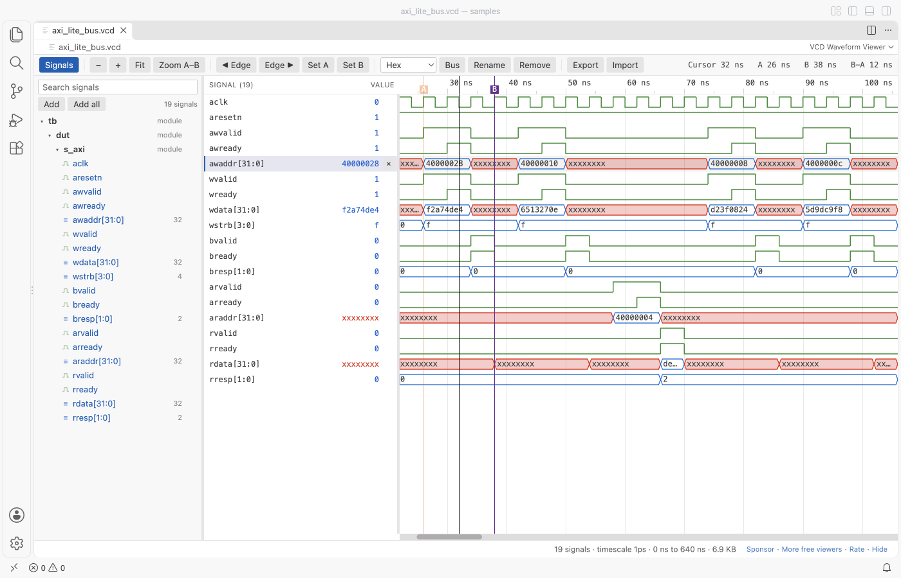

Open files in VS Code and Cursor / Binary, network and hardware
Measure the time between two signal edges in a VCD file
To measure a delay in a simulation, such as from awvalid rising to bvalid falling, you put a marker on each edge and read the difference. VCD Viewer opens the .vcd file in VS Code, and the A and B keys place two markers while the toolbar shows A, B and the time between them in the unit of the zoom. The Edge buttons and the arrow keys jump exactly onto the next change. Markers are free. Zovo Pro (USD 19 once) adds a signal activity report with pulse widths and clock periods, with 3 free tries.
Free, MIT license. Extension ID zovo.zovo-vcd-waveform-viewer, version 0.2.2. Needs VS Code 1.90.0 or newer.

Steps in VS Code
- Install VCD Viewer from the Marketplace, or press Ctrl+P (Cmd+P on macOS) and run
ext install zovo.zovo-vcd-waveform-viewer. - Click the
.vcdfile in the Explorer. The first 64 signals show at once. Double-click a signal in the tree to add it, or type in the search box above the tree. - Zoom with Ctrl or Cmd and the wheel, and move through time with Shift and the wheel or a drag.
- Click the name of the first signal, then click near its edge. Press the Left or Right arrow key, or click Edge, to jump exactly onto the change. Press A.
- Click the second signal, jump onto its edge the same way and press B.
- Read the toolbar. It shows the times of A and B and the time between them, such as 12 ns. Click Zoom A-B to fill the view with that range.
Where Zovo Pro saves time
The viewer is free, with no signal limit and no sign-in. That covers markers A and B with the time between them, edge jumps, zoom, buses, radixes, search and the saved signal list per file. It works offline.
Markers measure one interval. To check every pulse and clock in a run, Signal Activity Report makes one table for the whole file with changes, rising and falling edges, high time, x or z time, the shortest high and low pulse and the clock period and frequency of every 1-bit signal, and the distinct values of every bus. The other Pro tools export signals to CSV and compare two VCD files.
With Signal Activity Report (Zovo Pro)
- Run "VCD Waveform Viewer: Signal Activity Report (Pro)" from the Command Palette or the ... menu of the open file, or right-click the
.vcdfile in the Explorer and pick "Zovo Pro: Signal activity report". - Wait for the report. It runs in a separate thread, so a large file does not block the editor.
- A try counts only when the tool gives you a result. Escape, Cancel or an error costs nothing.
Signal Activity Report works 3 times on your computer before it asks for a license, and a try counts only when you get a result. Opening a file shows no popup and no countdown.
Zovo Pro costs USD 19 once. It is not a subscription, and it turns on the Pro tools in every Zovo extension, not only VCD Viewer. After a card payment (Stripe) your license key shows on the next page. In VS Code, run "Zovo Pro: Enter Zovo Pro license key" from the Command Palette and paste it. The key is checked on your computer, with no network call. With GitHub Sponsors, pick the "$19 one time" tier, then run "Zovo Pro: I already paid: unlock with GitHub Sponsors" and sign in with the same GitHub account. With PayPal, send USD 19 with "Zovo Pro" in the note and the key comes by email within a day.
A team of 5: USD 59 once, by card or by PayPal. Every rule and every Pro tool is on the Zovo Pro page.
Steps in Cursor, Windsurf or VSCodium
- Open the Extensions view with Ctrl+Shift+X (Cmd+Shift+X on macOS).
- Search for
zovo.zovo-vcd-waveform-viewerand click Install. Cursor, Windsurf and VSCodium install from Open VSX, where it is published aszovo/zovo-vcd-waveform-viewer. - If your editor has no gallery, download the .vsix from the Open VSX page and run "Extensions: Install from VSIX...".
- Then use it the same way as in VS Code.
What VCD Viewer handles
- VCD files from Icarus Verilog, Verilator, Vivado, ModelSim and GHDL.
- Times in fs, ps, ns, µs, ms or s, from the
$timescaleof the file. - x and z values, and VHDL values U, W, L, H and dash.
- Large files. A 1.07 GB VCD with 20,000 signals showed its first waves after 4.3 s.
What it does not do
- VCD only. FST, GHW and LXT files are not read.
- The time between markers is the difference of two simulation times. Gate delays are only there if your simulation has them.
- Files larger than the
vcdViewer.maxFileMBsetting (16 GB) show a message instead.
Other options
- GTKWave. A free waveform viewer. It has a primary and a secondary marker and shows the time between them.
- Surfer. A free waveform viewer for VCD, FST and GHW files, with markers, for desktop and the browser.
Install counts and Open VSX status were checked on 13 November 2026. Descriptions in quotes are the extensions' own.
Questions
How do I snap a marker exactly onto an edge?
Select the signal, then press the Left or Right arrow key or click Edge. The cursor jumps to the previous or next change of that signal. Then press A or B.
Are the markers kept?
Yes. The signal list, radixes, names, zoom, cursor and markers are kept per file on your computer, also when the simulator writes the file again.
Can I measure every pulse of a signal?
The Signal Activity Report Pro tool lists the shortest high and low pulse and the clock period of every 1-bit signal.
Does it work in Cursor or Windsurf?
Yes. Cursor, Windsurf and VSCodium install extensions from Open VSX. Search for the extension in their Extensions view and install it there.
More about VCD Viewer
Read the VCD Viewer page for every feature and setting, or the source code on GitHub.
Related guides
- View VCD waveforms in VS Code
- Use a hex editor in VS Code
- Open a binary file in VS Code
- Open a PCAP file in VS Code
Support this work
If this extension saves you time, you can support the work on GitHub Sponsors. Monthly tiers start at $5, and one-time tiers start at $15. Sponsorship is optional, and the tool works the same without it.
Need your format supported?
Open a format request with a sample file, and I reply there whether it can be done. For USD 299 once, through this GitHub Sponsors tier, I add your file format or a missing feature to this extension, with tests, within 7 days.